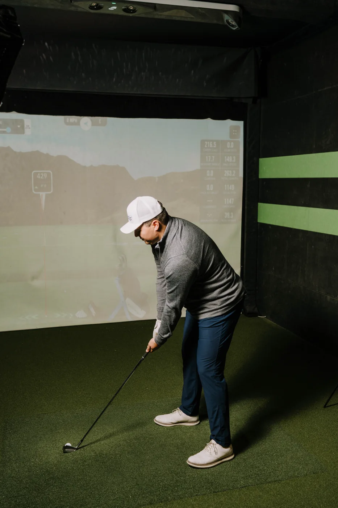
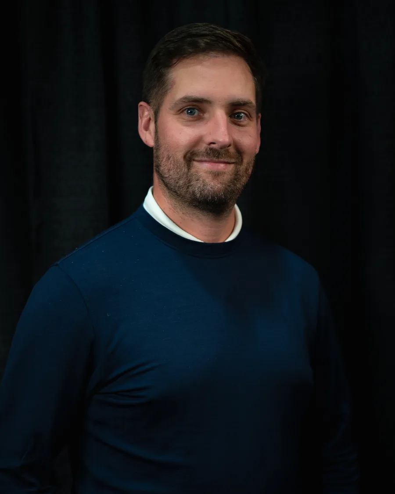
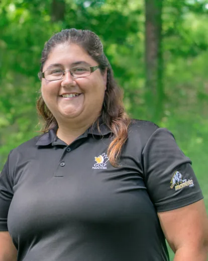

Make it
about your game.
Time to ask questions, work on your swing, and focus on the changes that matter to you.
- One session
- $100
- Three sessions
- $270
Make time for your game. Explore individual coaching, learn together, and keep your swing moving through winter.

Focus on your own game or bring someone along. Simulator bay rental is included in coaching sessions.
 SEE YOUR SWING DIFFERENTLY / EXAMPLE DATA
SEE YOUR SWING DIFFERENTLY / EXAMPLE DATAPair a fresh perspective with feedback from the simulator. A coaching session is time to understand your game and decide what to work on next.
Tell your coach what you want from your game, what feels difficult, and what you’d like to improve.
Use ball-flight feedback to understand what happens when you change your swing. Your coach can help connect the numbers to what you feel.
Ask what to practise between lessons so you can keep building on the work you’ve started.
Experienced teaching professionals with competitive
backgrounds across Manitoba and beyond.


Learn together. Keep practising. Make your next season something to look forward to.

We’re putting together our winter clinics. Dates, topics, coaches and registration details will be posted here once confirmed.
Ask about winter clinicsTell us what you’re working towards. We’ll help you explore the coaching options at AVID.